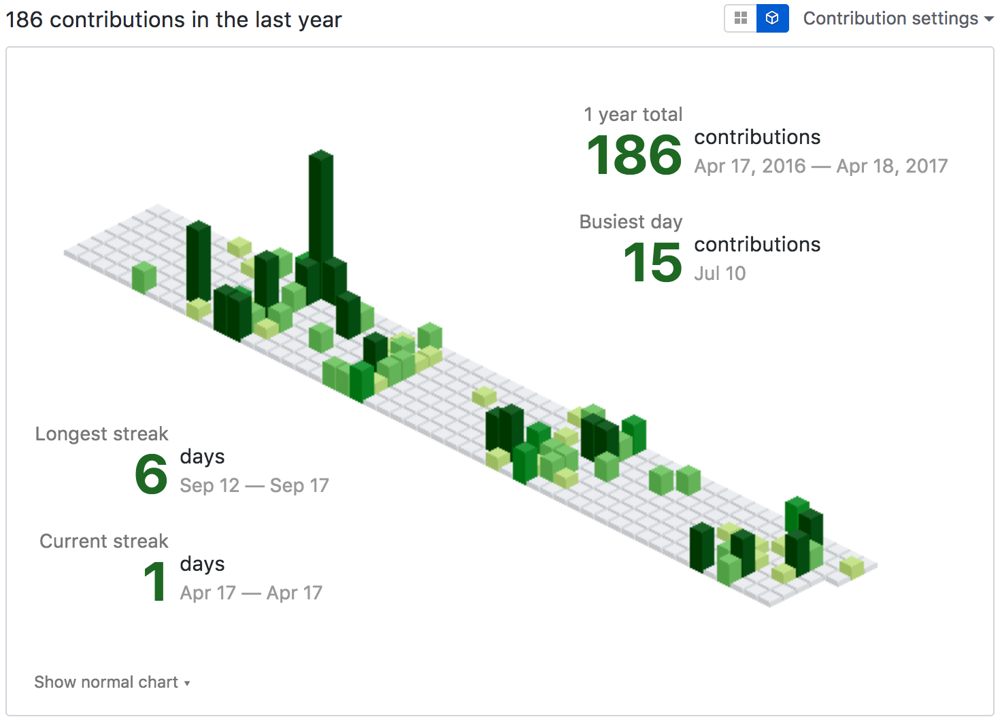
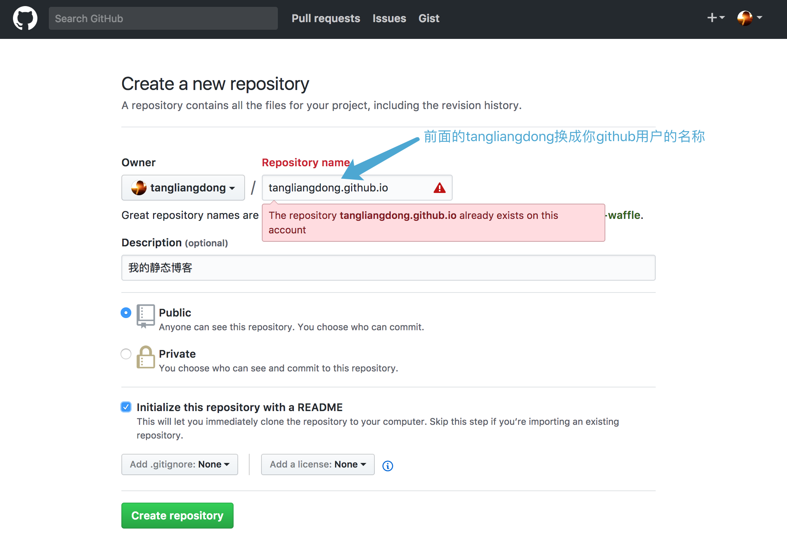
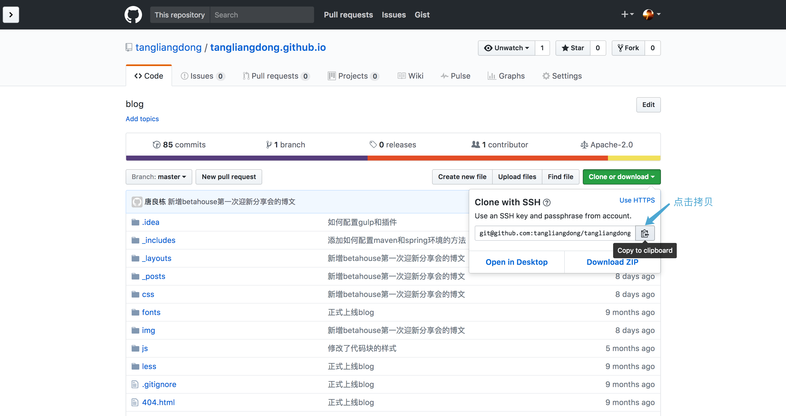
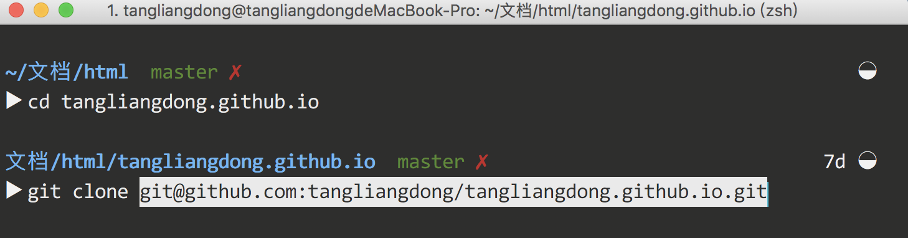
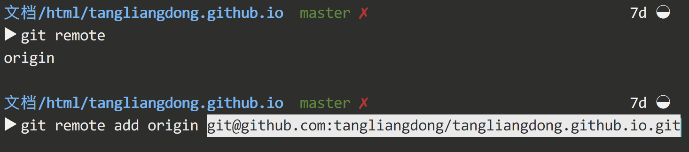
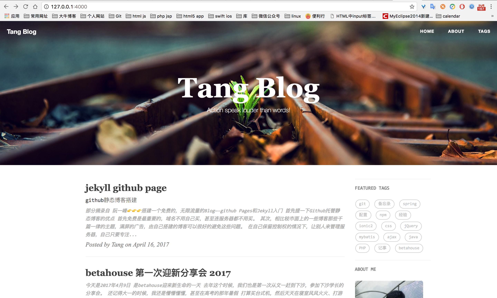
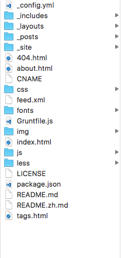
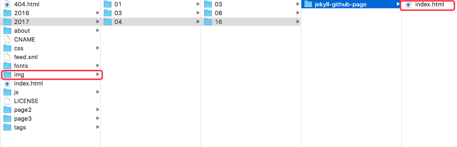

jekyll github page
部分摘录自 阮一峰👉👉👉搭建一个免费的，无限流量的Blog—-github Pages和Jekyll入门
首先提一下Github托管静态博客的优点
- 首先免费是最重要的，域名不用自己买，甚至连服务器都不用买。
- 其次，相比较市面上的一些博客那些千篇一律的主题，满屏的广告，由自己搭建的博客可以很好的避免这些问题。
- 在自己保留控制权的情况下，让别人来管理服务器，自己只要专注写博客就行。
- 享受git的版本管理功能，不用担心文章遗失。相比较wordpress保存在数据库，数据更不易丢失。
- 你只要用自己喜欢的编辑器写文章就可以了，其他事情一概不用操心，都由github处理。
相比较wordpress,就我个人的使用体验来说。。。。。
好吧，其实我建好wordpress 就发过两次文章，这两次还是发的相同的一篇，因为服务器被我搞爆炸了，数据库又没备份，然后只能重新开始写。
后来我就再也没动力写过，鼓捣麻烦，还怕炸了，万一没备份，又是一把辛酸泪。
又来知道betahouse学长再用的都是github托管的静态博客，知道了原来博客也是可以保存在本地，只要commit一下，再push到远程仓库，就能将很快更新博客。让github托管我的博客，就不怕什么时候突然就炸了，而且代码在本地都有，根本不怕丢。
而且每次推送到github上都会在github上有记录

像盖房子一样，是不是很有成就感。
github Pages可以被认为是用户编写的、托管在github上的静态网页。
由github提供模板，允许站内生成网页，但也允许用户自己编写网页，然后上传。有意思的是，这种上传并不是单纯的上传，而是会经过Jekyll程序的再处理。
Jekyll（发音/‘dʒiːk əl/，”杰克尔”）是一个静态站点生成器，它会根据网页源码生成静态文件。它提供了模板、变量、插件等功能，所以实际上可以用来编写整个网站。
你先在本地编写符合Jekyll规范的网站源码，然后上传到github，由github生成并托管整个网站。
如何搭建静态博客
先在github上新建一个仓库

该仓库的名称要遵守github pages的命名规范,假如你的博客用户名是tangliangdong,那么你的仓库就要命名成 tangliangdong.github.io，而且如若你的博客没绑定域名，则默认就是这个域名tangliangdong.github.io，其实也还不错。
clone到本地仓库、或者本地连接到远程仓库
clone到本地仓库

先在本地创建一个文件夹当做博客的根目录，命令行cd到博客的根目录 git init 初始化仓库。然后就可以克隆远程的仓库到本地。

或者本地连接到远程仓库
命令行cd到博客的根目录,git remote 显示本地仓库连接的所有远程仓库。通过 git remote add [remote-name] [url] 添加github远程仓库。remote-name 是你给远程仓库取的名字，以后拉取和推送就用这个别名。

git fetch [remote-name]可以从远程仓库
拉取最新的提交。
在本地安装jekyll
如果是 Mac OS系统 建议在命令前加上
sudo然后输入管理员密码，以管理员的身份运行指令，不然可能会出现因权限不足，而导致安装失败的情况。
写完博客 你可能需要先看一下呈现的效果，必要的时候可能还要改下css，因为页面都是通过jekyll来生成的，不可能每次修改都提交下，然后再访问博客域名去看效果。
那么还有种办法，就是本地搭建jekyll环境，想看效果的时候 命令行cd到博客的根目录启动 jekyll serve 一下，再访问 localhost:4000，就在本地看到自己的博客。

接下来让我们来搭建下 jekyll 环境
- 基于 Ruby
- DevKit
- 使用Markdown书写文章
需要先安装 Ruby 下载页面
Mac 自带了Ruby，直接通过命令
ruby -v查看ruby是否安装成功。
在安装好rubyinstaller后可以通过命令ruby -v检测是否安装成功。
在以上完成rubyinstaller和DevKit后，就能使用 gem install jekyll 安装jekyll
输入 jekyll -v 查看jekyll 是否安装成功。
如果有问题也可以参考 配置jekyll安装环境与部署博客网站
如果自己会编写静态博客，可以自己来写，jekyll new blogname 来新建一个干净的博客。
我的博客 就是把别人的博客主题clone过来，自己稍微修饰下，就直接上线了，这也是很方便的方式，不需要太多的精力，就能拥有自己的博客。
看看博客的目录结构

- _config.yml 整个博客的核心配置文件，保存配置数据。很多配置选项都可以直接在命令行中进行设置，
- _includes 你可以加载这些包含部分到你的布局或者文章中以方便重用，比如页面的头部、底部和导航，是可以重用的
- _layouts（布局）是包裹在文章外部的模板。
- _posts 这里放的就是你的文章了。文件格式很重要，
- _site 一旦 Jekyll 完成转换，就会将生成的页面放在这里（默认）。最好将这个目录放进你的 .gitignore 文件中。会把css和img文件夹都放进去
- 404.html 找不到路径时显示的页面
- about.html 个人介绍页面
- CNAME 为你的博客绑定自有域名的文件，只要在里面输入你要绑定的域名就行了。
- css 博客所有的css样式文件
- feed.xml
- fonts 博客的字体
- Gruntfile.js
- img 博客的图片
- index.html
- js
- less
- LICENSE
- package.json 需要的包
- README.md 项目的英文介绍
- README.zh.md 项目的中文介绍
基本都不需要动，只需要最开始改改_config_yml，把需要的图片放到 img 里面，然后在 _posts 文件夹里写文章就行了。
书写博客的规范
博客的头部申明
1 | --- |
下面就可以开始你的博客了。
因为写博客需要用markdown语法，所以需要先掌握下markdown基本的语法，其实很简单，
Markdown 的目标是实现「易读易写」。可读性，无论如何，都是最重要的。一份使用 Markdown 格式撰写的文件应该可以直接以纯文本发布，并且看起来不会像是由许多标签或是格式指令所构成。
Markdown 语法的目标是：成为一种适用于网络的书写语言。Markdown 不是想要取代 HTML，甚至也没有要和它相近，它的语法种类很少，只对应 HTML 标记的一小部分。Markdown 的构想不是要使得 HTML 文档更容易书写。在我看来， HTML 已经很容易写了。Markdown 的理念是，能让文档更容易读、写和随意改。HTML 是一种发布的格式，Markdown 是一种书写的格式。就这样，Markdown 的格式语法只涵盖纯文本可以涵盖的范围。
可以去学习下 献给写作者的 Markdown 新手指南 ，看完基本够用了
如果还想学，戳这里 👉👉👉 Markdown 语法说明 (简体中文版)
有个注意点 因为最后显示的页面都是在 _site 文件夹里面，引用图片的时候有个路径的问题。

需要写成这样，才能正确获取到图片。
1 |  |
上传博客
打开命令行,cd 到博客的根目录，输入：
1 | git push origin master |
origin 是你给远程仓库起的名字，master 代表的是远程仓库的一个分支。
jekyll博客主题
分享一些 我之前搜来的博客主题。
俗话说 好记性不如烂笔（jiàn）头（pán）。
写博客 不仅可以很好地整理自己的思路，还能很好的记录下来，自己以后忘记的话，还能随时翻看。
祝大家都能拥有属于自己的博客。